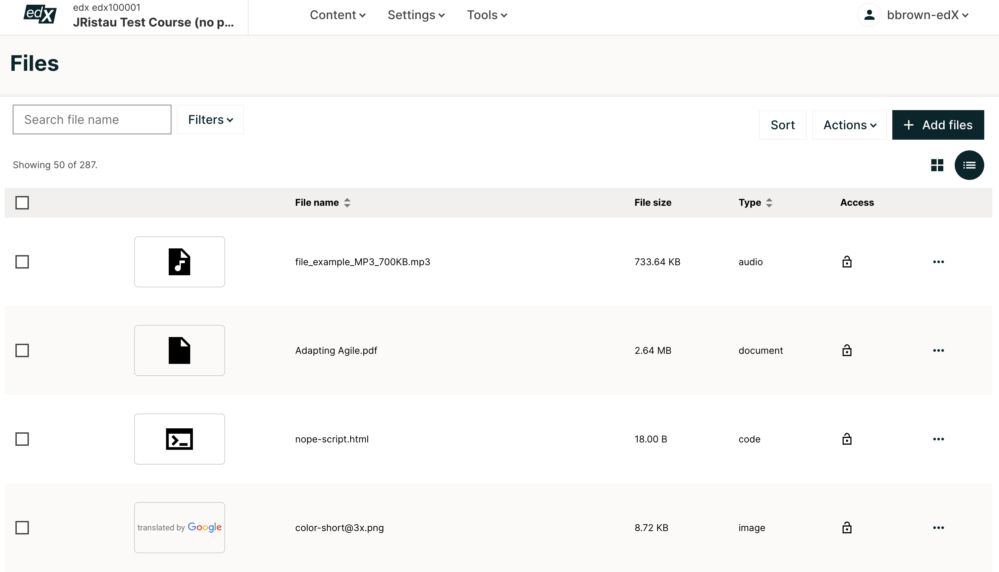
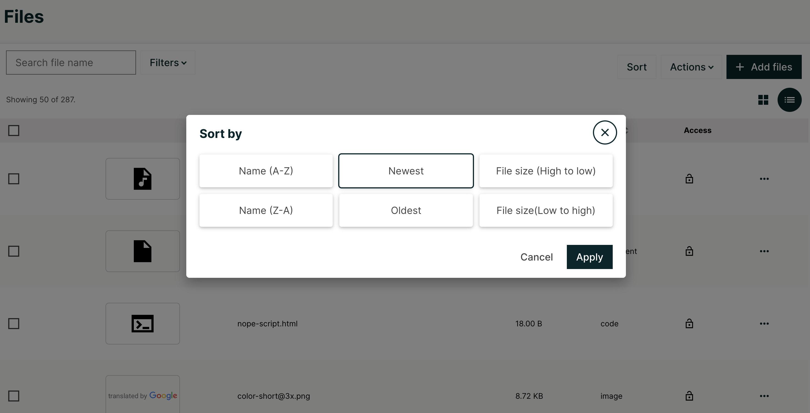

11.1. Adding Files to a Course#
Adding files, such as images, that you can use in your course has the following steps.
The course team uploads a file on the Files page in Studio.
Studio generates two URLs for the file.
The Studio URL is used to add the file inside the course, such as in a component or on a page.
The web URL is used to add the file outside the course, such as in an email message or external web page.
The course team adds a link to the file inside or outside the course.
The file is visible in the course, email, or external web page.
For more information, see the following topics.
11.1.1. The Files Page#
You manage most files for your course, including image files, on the Files page. This page lists the files that you have added, along with the following capabilities and information regarding the files:
A checkbox for Download and Delete bulk actions
A thumbnail of the file
The file name
The file size
The file type
An indication of whether the file is locked.
The three dot menu allows you to copy the Studio URL, copy the web URL, lock the file, click on the Info button, and delete a file
The Info button within the three dot menu allows you to additionally see the date added and details about whether the file is within the course as well as the number of times it appears in your course.
This page also includes a Search option to help you find specific files. For more information, see Find an Uploaded File.
11.1.2. File Size#
The maximum size for each file is 10 MB. We recommend that you use standard compression tools to reduce PDF and image file sizes before you add the files to your course.
You can upload multiple files at a time.
If you have very large audio files or large data sets to share with your students, do not use the Files page to add these files to your course. Instead, use another hosting service to host these files.
11.1.3. Upload Files#
Note
Ensure that you obtain copyright permissions for files and images you upload to your course, and that you cite sources appropriately.
To upload one or more files, follow these steps.
Create or locate the files on your computer.
Note
When Studio generates URLs for an uploaded file, the file name becomes part of the URL and is visible to students when they access the file. Avoid using file names that contain information that you do not want to share about the file contents, such as “Answerkey.pdf”.
On the Content menu, select Files.
On the Files page, select the Add Files button at the top of the page and select the files that you want to add.
Note
If you upload a file that has the same name as an existing course file, the original file is overwritten without warning.
The Files page refreshes to show the uploaded file or files.
11.1.4. Find an Uploaded File#
The Files page lists up to 50 files at one time. If your course has more than 50 files, additional files are listed on other pages.
To find a file on the Files page, you can use the Search option, or you can view the page that lists the file.
To use the Search option, enter one of the following search terms in the Search field.
The full file name.
The file name extension, or file type.
Part of the file name. You can also enter multiple parts of a file name.
For example, if the file is named FirstCourseImage.jpg, you can enter any of the following search terms in the Search field.
FirstCourseImage.jpg.jpgFirstImageFirst.jpg
You can also sort files by Name (A-Z), Name (Z-A), Newest, Oldest, File size (low to high), or filter files by Type (Code, Images, Documents, Audio). For more information, see Sort Files or Filter Files.
11.1.5. Sort Files#
On the Files page, you can sort your files by Name (A-Z), Name (Z-A), Newest, Oldest, File size (high to low), and File size (low to high). To sort by one of these, select what you wish to sort by and click Apply.
11.1.6. Filter Files#
You can filter files by type so that only a selected type of file is visible. The list remains in the current sort order.
You can filter by the following file types.
Type |
Possible File Name Extensions |
|---|---|
Audio |
.aac, .mpeg, .mp3, .ogg, .wav |
Code |
.css, .html, .json, .php, .sql |
Documents |
.pdf, .txt, Microsoft Office and Open Office documents, presentations, spreadsheets |
Images |
.gif, .ico, .jpg, .jpeg, .png, .tif, .tiff |
To filter the list of files by type, follow these steps:
On the Files page, click the Filters button.
In the list, select the checkboxes for the types of file that you want.
The list refreshes to show only the type or types of file you selected.
To reset the list and view files of all types, clear all checkboxes.
11.1.7. Use an Uploaded File Inside or Outside the Course#
When you upload a file, Studio assigns a Studio URL and a web URL to the file. These URLs are found within the three dot menu or the info modal. To use an uploaded file, you add a link to the Studio URL or the web URL in your content.
Note
If you do not want to allow access to a file from outside your course, you can lock the file so that only learners who are signed in and enrolled in your course can access the file. For more information, see Lock a File.
11.1.7.1. Add a File or Image Inside the Course#
To add a file or image inside the course, such as to a component, a course update, or a course handout, follow these steps:
On the Files page, select Copy Studio URL from the three dot menu.
In the component or other content, paste the Studio URL.
For more information, see Add an Image to a Text Component.
11.1.7.2. Add a File or Image Outside the Course#
To add a file or image outside the course, such as to a bulk email message that you send from the LMS, follow these steps.
On the Files page, select the Copy Web URL from the three dot menu.
In the external content, paste the web URL.
Note
Be sure that you do not use the Studio URL in an email message. For more information about sending email messages, see Send an Email Message to Course Participants.
11.1.8. Lock a File#
By default, anyone can access a file you upload if they know the web URL, even if they are not enrolled in your course. You can prevent outside access to a file by locking the file. When you lock a file, the web URL only allows learners who are enrolled in your course and signed in to access the file.
To lock a file, select the lock icon in the row for the file.
11.1.9. Delete a File#
To delete a file, first click on the corresponding checkboxes of the files that you wish to delete, then click on the Actions button, and then select Delete. To delete all files, select the very first checkbox, then select the Action button and then select Delete.
Warning
After you delete a file, any links to the file from inside or outside the course are broken. You must update links to files that you delete.
11.1.10. Download a File#
To download individual files, multiple files at once, or all of your files, first click on corresponding checkboxes of the files that you wish to download, then click on the Actions button, and then select Download. To download all files, select the very first checkbox, then select the Action button and then select Download.